Manage the API with OpenShift API Management
In this section you will configure and secure the API that you have already deployed on OpenShift in the previous sections.
Import the API into OpenShift API Management
|
An API in OpenShift API Management is referred to as a Product. Each Product can have one or many Backends. A Backend is a web service that OpenShift API Management will proxy requests to, based on mapping rules defined in the Product. |
Because you already configured the Quarkus API for Service Discovery in an earlier section, you can import it automatically as follows:
Follow these steps to import Quarkus API:
-
Click the Create Product button under the APIs heading on the dashboard. This will load the New Product screen.
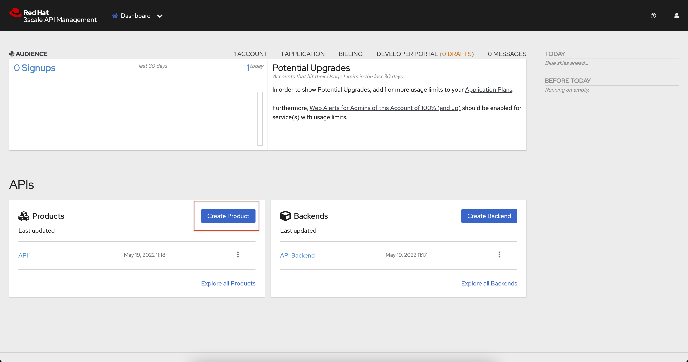 -
Select the Import from OpenShift option. If this option is greyed out, click the Authenticate to enable this option link to enable it.
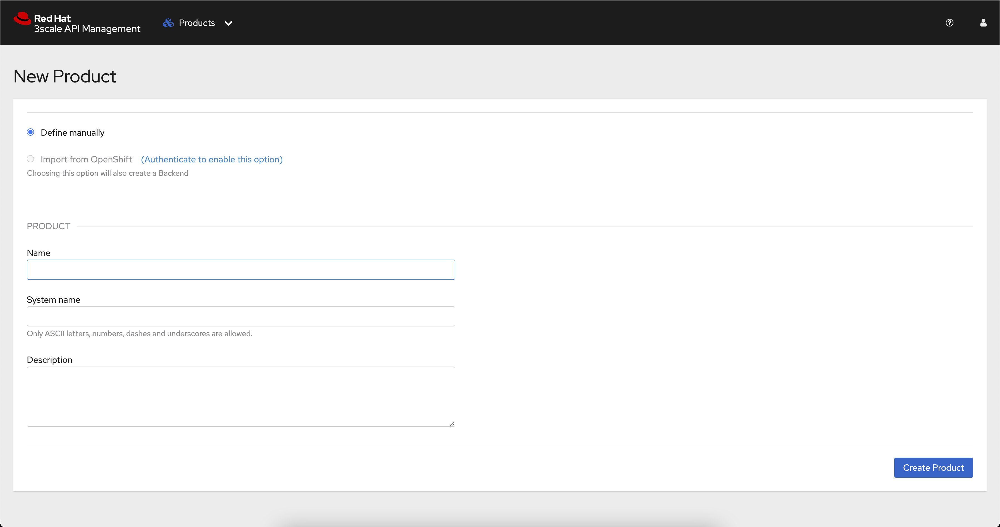 -
After selecting the Import from OpenShift option you will be able to use the dropdown fields to select:
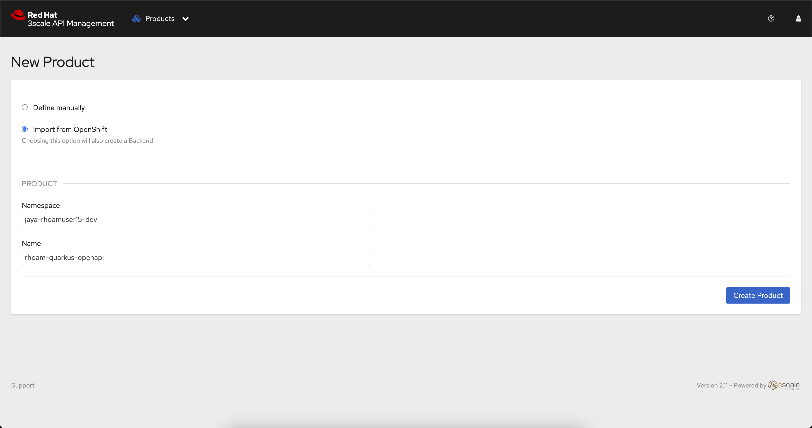-
The Namespace that contains your Quarkus application.
-
The rhoam-quarkus-api application.
If there is only one discoverable API, these fields are auto-populated
-
-
Click the Create Product button.
-
You will be redirected back to the OpenShift API Management dashboard where your new API Product is listed. If your Quarkus API isn’t listed in the APIs section after a few moments, try refreshing the page.
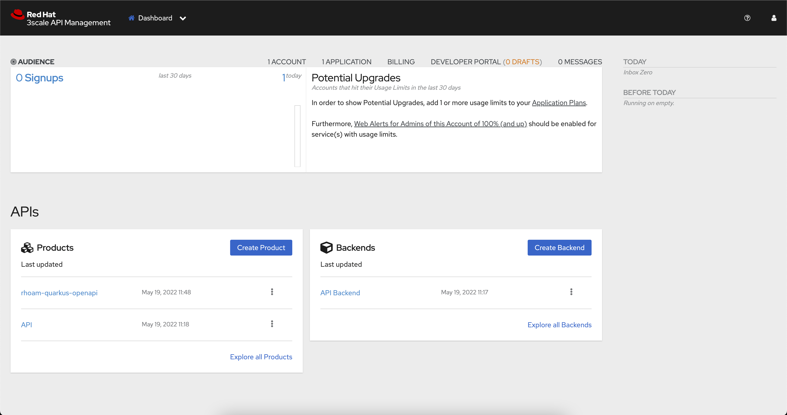
Verify the API Product and Backend
You can inspect the Product and Backend by following these steps:
-
Select the rhoam-quarkus-openapi API from the Products list to visit the Overview screen.
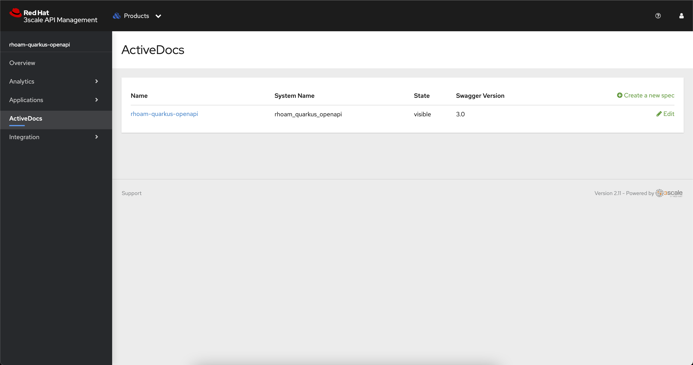 -
Click the ActiveDocs link on the left and verify that the rhoam-quarkus-openapi Swagger 3.0 spec was imported. The Swagger docs are generated from the
/q/openapi?format=jsonendpoint in the Quarkus app -
Expand the dropdown menu in the top navigation and select Backends.
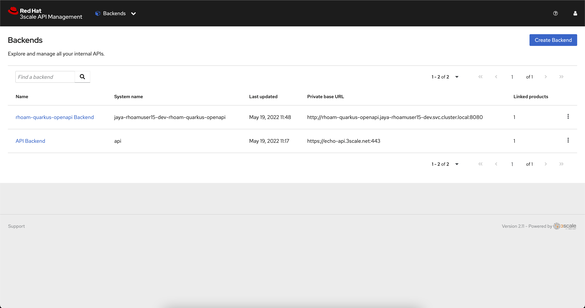 -
Verify that your rhoam-quarkus-openapi Backend is listed. You should also see that it’s using a private Service URL, e.g
http://rhoam-quarkus-openapi.user-dev.svc.cluster.local:8080.
Enable API Key Security
OpenShift API Management routes API requests through proxies known as APIcast instances.
|
APIcast is an NGINX-based API gateway that integrates your internal and external API services with the Red Hat OpenShift API Management Platform. APIcast enforces API security rules and policies. It supports multiple authentication patterns, and API Key security is the default setting for imported APIs. |
Since your API is now imported into OpenShift API Management, you’ll need an API Key to make authenticated requests against it.
Obtain the APIcast URL for the API
-
In the API Management dashboard, select your rhoam-quarkus-openapi from the Products list.
-
Navigate to Integration > Configuration using the side-menu. Your API is already available via the Staging APIcast, but the user_key parameter in the Example curl for testing is set to a placeholder.
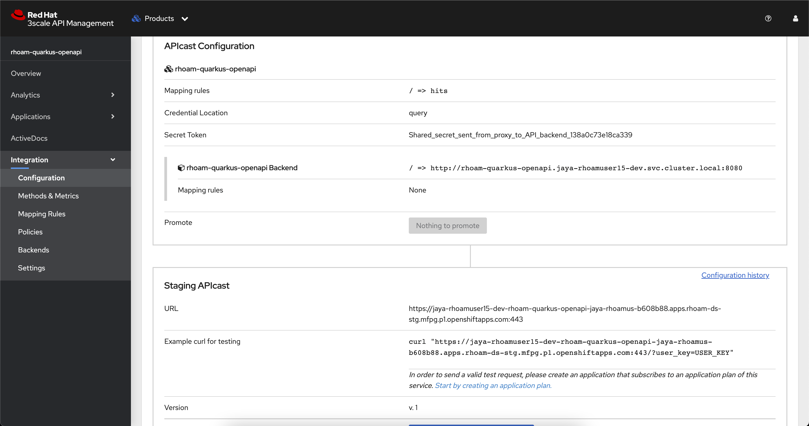 -
Copy the URL, e.g https://user-dev-rhoam-quarkus-openapi-3scale-api.cluster.com/?user_key=USER_KEY, and visit it in a browser or call it using your preferred HTTP client.
-
You should have received an Authentication failed response since the API Key (user_key) placeholder value is not valid.
To obtain an API Key you need to create an Application Plan and subscribe to an Application to that plan.
Create an Application Plan
|
In OpenShift API Management, Application Plans define usage rules and limits for your API. When a developer signs up to use your API, they can select an application plan from the ones you’ve defined. For example, you might create two application plans with different limits and pricing structures for an API, e.g., one free and the other paid. |
-
Select your rhoam-quarkus-openapi from the Products list.
-
Navigate to Applications > Application Plans using the side-menu.
-
Click the Create Application Plan button.
-
Enter following values:
-
RHOAM Open API Planfor Name. -
rhoam-openapi-planfor the System name. -
Uncheck the Applications require approval box.
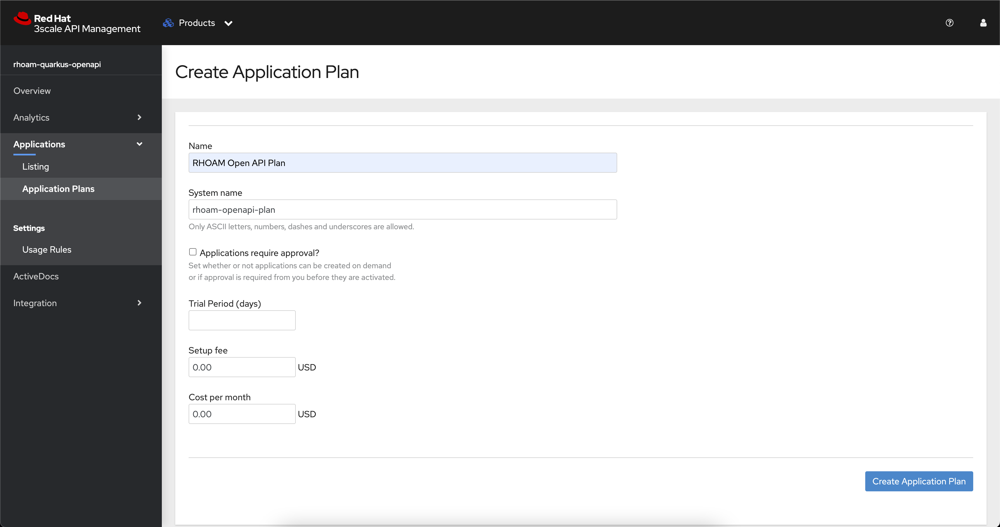
-
-
Click Create Application Plan. You will be redirected to the Application Plans listing.
-
Use the Publish link shown within the kebab menu of the newly created application plan to publish it. You will notice that the state of this plan is shown as
published.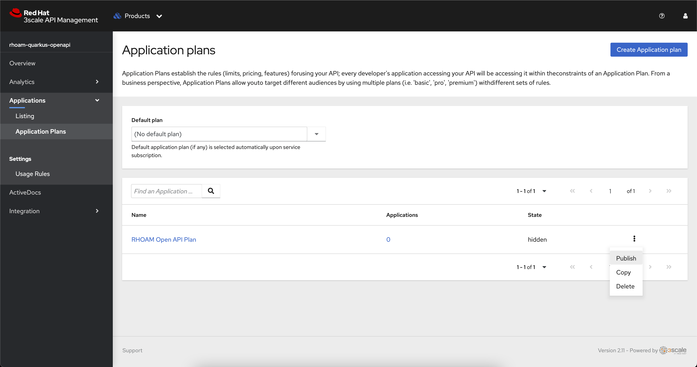
Create an Application
|
An Application is a subscription to the service (API Product) through the Application Plan created in the previous step. An Application is linked to developer accounts for each application plan they sign up for. The Application is normally associated with a unique set of credentials for the API, a traffic history of the calls sent to the API, and metadata captured at application creation. |
Next, you can create an Application registered to a developer account:
-
Expand the dropdown menu in the top navigation of OpenShift API Management and select Audience.
-
Choose the default Developer account from the Account listing.
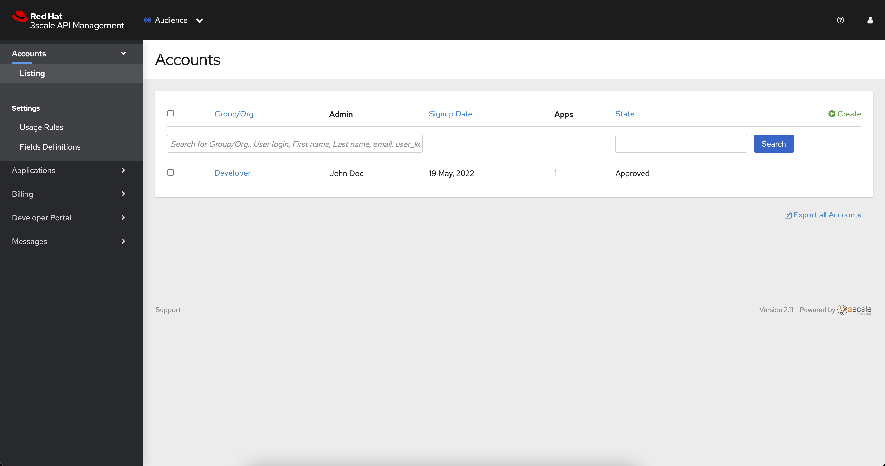 -
From the Developer account page select the Applications link at the top.
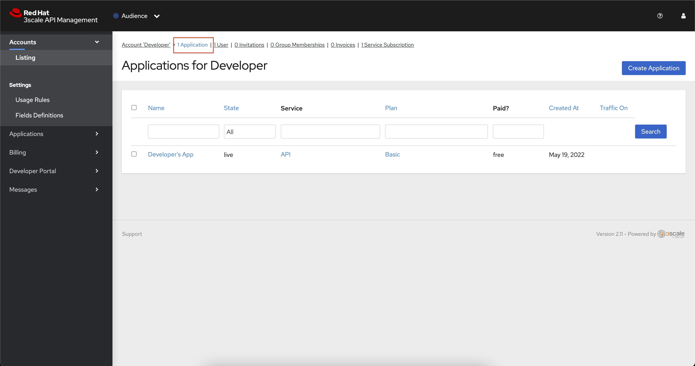 -
Click the Create Application link.
-
Use the following details to create the application:
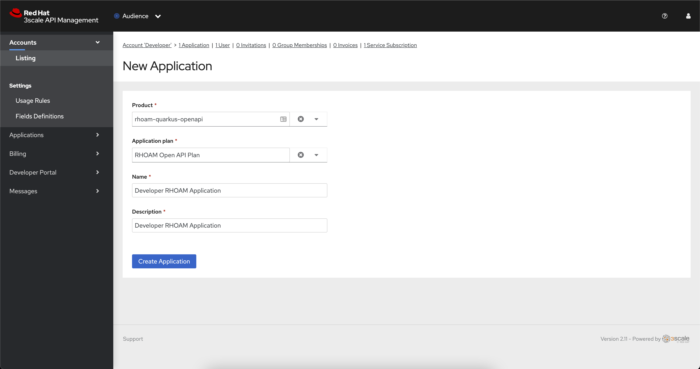-
Select rhoam-quarkus-openapi for the Product, and select RHOAM Open API Plan for the Application Plan.
-
Enter Developer RHOAM Application in the Name and Description fields.
-
Click the Create Application button.
-
-
You’ll be redirected to the Developer RHOAM Application page, and should see a User Key listed under the API Credentials section.
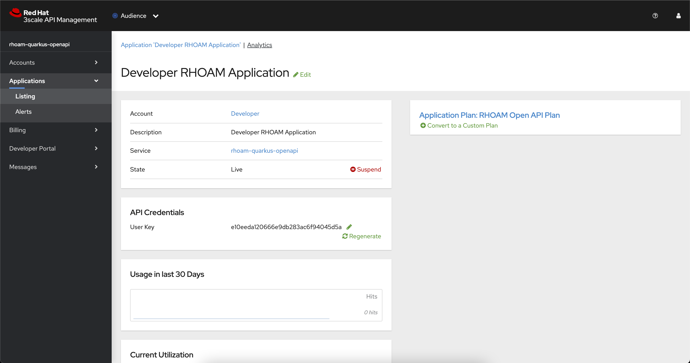
Call the API using your API Key
-
Now that you have a valid API Key you’re ready to make authenticated requests against your API.
-
Select your rhoam-quarkus-openapi from the Products list on the OpenShift API Management dashboard.
-
Navigate to Integration > Configuration using the side-menu.
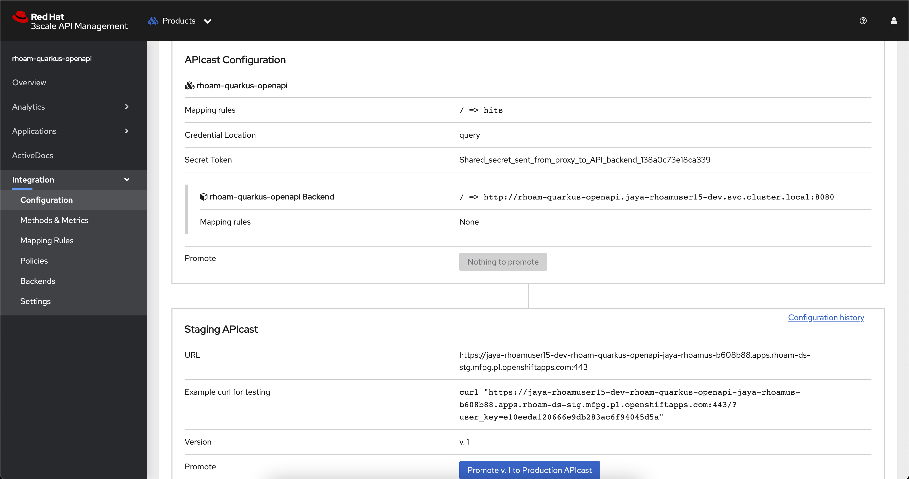 -
Copy the Staging URL, e.g https://user-dev-rhoam-quarkus-openapi-3scale-api.cluster.com/?user_key=API_KEY_GOES_HERE, and visit it in browser or using your preferred HTTP client. Make sure to the URL has the API Key value!
-
Append /fruits to the path, but before the ?user_key portion of the URL. A list of fruits should be returned in JSON format.
-
e.g https://user-dev-rhoam-quarkus-openapi-3scale-api.cluster.com/fruits?user_key=API_KEY_GOES_HERE
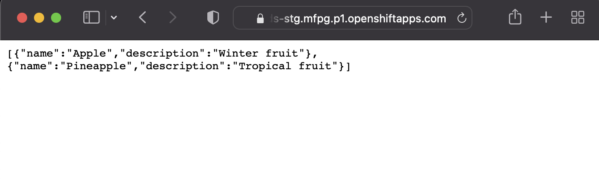
-
Delete the Unprotected Route
-
You visited a URL exposed directly by a Route in your OpenShift project in the first section of this guide. This endpoint was useful for testing, but is unprotected. You can now remove this public Route.
-
In the OpenShift console, click the rhoam-quarkus-openapi deployment in the Topology View.
-
Select the Resources tab in the panel that appeared.
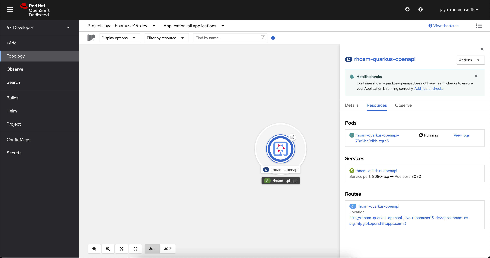 -
Click the rhoam-quarkus-openapi item under the Routes heading.
-
Expand the Actions dropdown and click Delete Route.
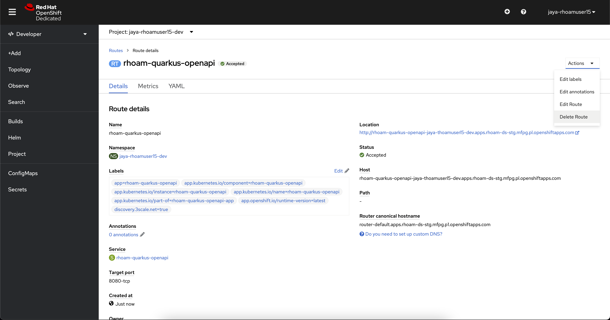
Congratulations! The only endpoint available to access your API now enforces API Key security.